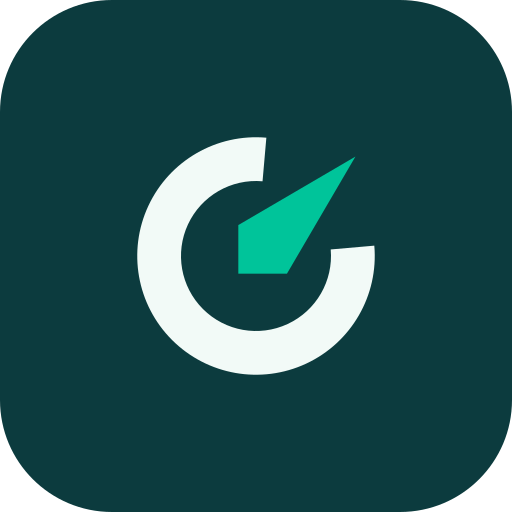

Brand guide · v1.0 · November 2026
Get found on Google. Get cited by AI.
Crawlvane checks whether search engines, answer engines and AI assistants can read and trust a website. It gives a score from 0 to 100 and fixes you can paste. The brand should feel like a weather vane: calm, exact, and pointing somewhere useful.
Logo
The C-Vane: an open ring that forms the C and echoes the score ring, with a needle pointing up and to the right. Clear space is half the mark height. Minimum sizes are 20 px for the mark and 96 px for the lockup.

Colour
Stormy Teal is for action and Deep Teal for weight. Mint is an accent, and as text it uses --signal-2. Gold is for small highlights only. Status colours belong to audit results alone, and each one always comes with an icon and a word.
Type
Figtree for headingsDM Sans for reading and UIGeist Mono for GPTBot
Body text is 16 px minimum, labels 14 px, and nothing goes below 12 px. Scores use tabular figures.Logo: do and don't
Colour and status
3 fixes ready{{ i16.pass }}Do. Mint text uses --signal-2 (5.5:1).
3 fixes ready{{ i16.fail }}Don't. Use raw Mint as text on white (2.2:1).
{{ i16.pass }}Pass{{ i16.pass }}Do. Pair status with an icon and a word, in status green.
{{ i16.fail }}Don't. Use colour dots alone, or brand Mint for pass.
Get cited by AI.{{ i16.pass }}Do. Use Gold as a small highlight behind dark text.
{{ i16.fail }}Don't. Use purple gradients, glows or orbs.
Voice
Plain, confident, practical. Use short sentences. Say what is wrong, why it matters and what to change. Never promise rankings or AI citations.{{ i16.pass }}{{ v.do }}
{{ i16.fail }}{{ v.dont }}
ImageryShow the product with example data. No stock photos, robots, brains or sparkles.
IconsLucide outline icons with a 2 px stroke and currentColor. Each status has one fixed icon.
AccessibilityMeet WCAG AA, with a visible 2 px focus ring, 44 px targets and reduced-motion support.
ProofDon't use fake testimonials, logos, usage numbers or awards. Use yourbusiness.com in examples.